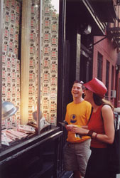

|
> >
> > > > > about
The
blind eye projects hail the coming age of perfectly seductive media
by promoting a movement for the perfect opposite: media and art
made to deflect not attract.
How
deflection works:
demo
mission-summary
The blind eye projects
seek to make and promote art and media that deflect the interest of the
audience and attempt to subtract stimulation. They propose nothing less
than work that reverses the historic logic of media and art. more
from
where
Everywhere possible.
The project' center is based in New York City, the heart of the beast.
At least one of its hearts.
reverse
media logic
Media reversal and
deflection are like sound wave cancellation techniques. They seek to neutralize
sensation by creating its opposite. In the case of sound, this opposite
is a wave that saps the energy of the existing sound. Think of a bath
tub where equal and opposite waves collide and cancel each other leading
to a still tub. The action, its process, cancels stimulation.
Media
reversal, or negation, pops the media issue out of the conventional media
loop. Outside, where the project works to inspire an aesthetic movement.
A movement with new pleasures. A movement that's tough enough to disrupt
and resist the electronic media juggernaut that's now enveloping human
life around the globe for better or worse.
items
"for sale"
The project also sells
radical "art" videos as novelty gift items with mass appeal.
But the project is more than its videos. It includes storefronts, street-stand
"selling" performances and "advertising." These, and
related undertakings, are all part of the blind eye project.
In many
regards this is an art project. One that's most eager to distribute videotapes
as novelty gifts to non-art-world people.
In
fact, the laughter and understandings or confusions that arise from such
gift exchanges are the essence of the project's public presentation. "High
concept" as mass market gift item without condescending irony.
These
videos work best as gifts because when you offer one to someone, you emphasize
its intention. Which is primarily "deflection." As in, "Hey,
my very dear couch-potato, check this out. Video for tv made deliberately
to make you look away!"
That's
why the exoptic fields box is like a greeting card. Because inciting conversation
about media deflection and reversal is more important than the video content
itself.
top
collaborators
Collaborators have
recently included Nice, France-based painter Nathalie Adamidi; New York-based
real-cinema artist Benton-C Bainbridge; world famous graphic designer
Bob Gill; New York based musician Joe Mendelsson, sound artist Gen Ken
Montgomery, sculpture Steven Katz, and video animator and dmz production
company master Eric Solstein. Also Oakland, CA-based video artist Matt
Dibble.
top
|

| A
blind eye project window at "C-Ya!" in the East Village New York City,
between avenues "A" and "B" on 5th St. |
|
origin-summary
First came the
"ambient revolution," an idea that sprang from willy mal's
enthusiasm for the rapid changes that occurred in tv, including
the news, during the 1980s. more
blind
eye manifesto
Let me tell you how the daylight soothed
our eyes./ All night we we fought and . . . "manifesto"
the
blind eye projects' mission
The project
advocates a complete aesthetic reversal, where experiments in "deflection"
and de-stimulation might lead to a practical, even decorative, liberatory
aesthetic for our time. How
else do you respond as we hurl into a world where everyone may soon
receive upon demand all the info /entertainment she/he may ever
desire!?
To this end, the project seeks to promote techniques for benign
sensory negation, "deflection," in electronic media. Such
deflective media strive to subtract all stimulation. And by so reversing
the fundamental principle of nearly all media, which is attraction/stimulation,
the project seeks to provoke radical departures in media and design
on par with those that followed the development of impressionist
painting and the discovery of microbial life.
In this regard the project is like any previous avant-garde. Only
more so. It proposes nothing less than the final avant garde. It
proposes a complete flip Art and Media on their heads, as these
have been understood throughout human history.
back to top
project
origins
The "ambient
revolution" idea sprang from willy mal's enthusiasm for the
rapid changes that occurred in tv, including the news, during the
1980s. The striking progression of sensation-driven tv programming
promised to undermine tv's authority in public life and, under the
transformations wrought by the ongoing ambient revolution, to transform
tv into nothing more or less than an ambient emotion emitter with
a selection dial. From whence the term: "ambient revolution."
This revolution required no agitators. Over the years the idea evolved
in correspondence and conversation among a small group of movie-media
producers and intellectuals.
In the mid-1990s, mal proposed marketing videos called "look
away tv" as an extension of the ambient revolution, but he
found no backers. That work on "look away tv" became the
foundation of "the blind eye project." But the blind eye
project went beyond the ambient revolution by recognizing contemporary
movie-media producers as the greatest seducers of all time. And
by realizing that this continuous seduction in media called for
its opposite. The original "look away tv" recognized this
idea of reversal but not its implications.
top
Then, in 1997, after a secret all-night conference of
self-described media druids and moguls in a San Francisco mansion
over the Pacific, willy mal formulated a critical departure in the
blind eye manifesto.
It was useless to deny the joys of perfectly attractive and diverse
media. So why resist? Why? Because from inside the all absorbing
mediasphere there is no way to observe it, no critical outpost from
which to check its progress. Therefore, to gain such critical distance
the blind eye project advocated total media reversal. A complete
media logic flip.
top
blind
eye media, llc-productions
In early 2000, willy mal set up blind eye media, llc,
to produce the following:
--the "exoptic fields" video
-- the exoptic fields magazine advertisement campaign in the Utne
Reader.
-- an example of deflective media with added stimulation, the "blind
heat" video made by Benton C.
-- the "exoptic fields" installation at TRANSCINEMA in
the HERE art gallery in New York City end of November 2000.
--blind eye storefronts in New York City, London, and Vienna.
-- In New York, the East Village window at C-Ya!, 524 East 5th St.,
between Ave's "A" and "B" and the Times Square
window, 125 West 42nd St., between Ave's 6 and 7.
--"deflect media extravaganza" Times Square, January 16, 2002 to
February 2, 2002, presented by Chashama at 125 West 42nd St.
top
|
|